iPad için okuma & çalışma asistanıA reading & study assistant for iPad
Bir web sayfasını ya da PDF'i getir. Sol tarafta orijinal metin durur; sağ tarafta yapay zeka özetler, açıklar, çevirir — sen de hepsinin üstüne Apple Pencil ile not alırsın. Bring a web page or a PDF. The original stays on the left; on the right, AI summarizes, explains and translates — and you write over all of it with Apple Pencil.
iPadOS 26+ · İlk 10 kaynak ücretsiz · Kendi API anahtarınla çalışır iPadOS 26+ · First 10 sources free · Works with your own API key
Yapay zekâ ajanları, bir hedefe ulaşmak için kendi adımlarını planlayan ve araçlarını kendi seçen sistemlerdir.AI agents are systems that plan their own steps and choose their own tools to reach a goal.
Klasik bir programdan farkı, ne yapacağının her satırının önceden yazılmamış olmasıdır; model duruma göre karar verir.Unlike a classic program, not every line of what it does is written in advance; the model decides in context.
Bu esneklik güçlüdür, ama denetimi zorlaştırır. İzlenebilirlik şarttır.This flexibility is powerful, but it makes oversight harder. Traceability is essential.
Klasik programda her adım önceden yazılır; ajanda kararı model o anki duruma göre verir.In a classic program every step is written up front; in an agent the model decides in the moment.
Esneklik güç katar ama denetimi zorlaştırır; bu yüzden küçük, doğrulanabilir adımlar gerekir.Flexibility adds power but weakens oversight; hence small, verifiable steps.
İyi tasarlanmış bir ajan, izlenebilir adımlardan oluşur.A well-designed agent is built from traceable steps.
Nasıl çalışırHow it works
PaperReader arka planda gezinmez, senin adına hiçbir yere giriş yapmaz. Hangi metnin uygulamaya gireceğine her zaman sen karar verirsin.PaperReader never crawls in the background and never logs in on your behalf. You always decide which text enters the app.
Uygulama içi tarayıcıdan bir sayfa, Dosyalar'dan bir PDF ya da Safari'nin Paylaş menüsünden tek dokunuş. Metin, resim ve tablolarıyla yapısı korunarak alınır.A page from the built-in browser, a PDF from Files, or one tap from Safari's Share sheet. Text, images and tables come in with their structure intact.
Sağ panele blok ekle: özet, açıklamalı metin, terimler sözlüğü, öğrenme kartları ya da kaynağa soru sorduğun sohbet. Her blok istediğin dilde üretilir.Add blocks to the right panel: a summary, annotated text, a glossary, flashcards, or a chat that answers from the source. Every block is generated in the language you choose.
Her bloğun üstü şeffaf bir tuvaldir. Kalemle çiz, altını çiz, damga bas, metin kutusu koy. Notların içeriğe yapışır; kaydırınca ve yakınlaştırınca yerinden oynamaz.Every block carries a transparent canvas. Draw, underline, stamp, drop a text box. Your notes stick to the content and stay put when you scroll or zoom.
DüzenStructure
Üç kademe, baştan tam. Her çalışma tek bir kaynağa bağlıdır; ilgili kaynaklar bir bölümde, konular defterlerde toplanır.Three levels, complete from day one. Each work is tied to a single source; related sources live in a section, topics in notebooks.
Bir konu ya da amaç: "Tez Araştırması", "İngilizce Makaleler". Kenar çubuğunda durur, sürükleyerek sıralanır.A topic or a purpose: "Thesis", "English Articles". Sits in the sidebar; drag to reorder.
Defterin sayfa sekmesi; ilgili kaynakların klasörü. Sohbet ve arama kapsamı buraya genişletilebilir.A page tab inside the notebook; a folder of related sources. Chat and search can widen their scope to it.
Tek kaynak + çalışma alanı. Yıldızla, mühürle, okuma durumunu izle; filtrele, sırala, başka deftere taşı. Silinen çöp kutusuna gider.One source + one workspace. Star it, stamp it, track reading state; filter, sort, move to another notebook. Deleted items go to the trash.
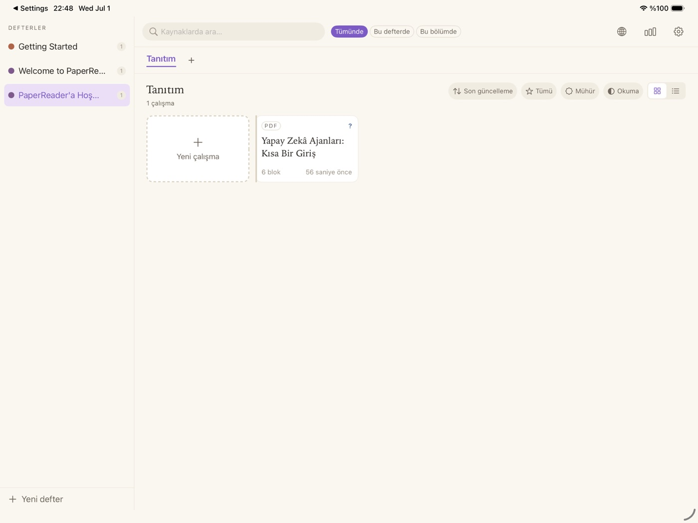
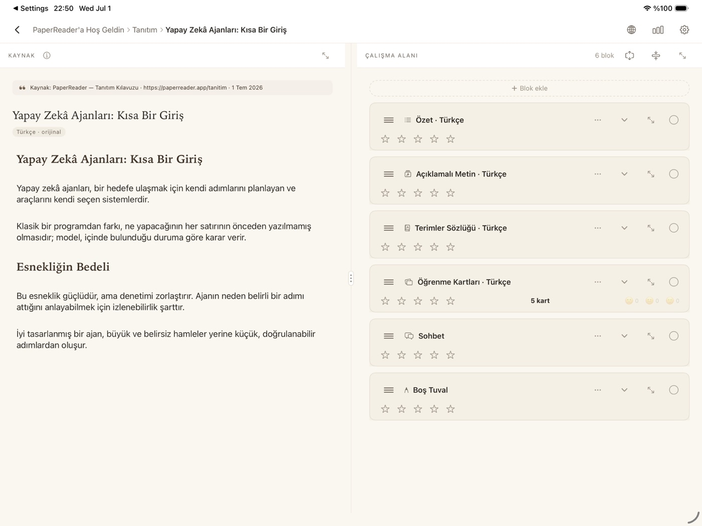
Çalışma alanıThe workspace
Yapay zeka blokları bir kez üretilir ve donar; sonra yalnızca senin notlarınla değişir. Yeni bir bakış istersen yeni bir blok eklersin.AI blocks are generated once and frozen; after that only your notes change them. Want a fresh take? Add another block.
Belgenin boyutuyla ölçeklenen, başlıklı bir özet. Üstte ANA FİKİR, altta SONUÇ; arada Önemli / Tanım / Örnek kutuları.A headed summary that scales with the document. MAIN IDEA on top, CONCLUSION at the bottom, Important / Definition / Example callouts in between.
✦ Yapay zekaAIKaynağın birebir metni — istersen kendi dilinde — ve üstüne yapay zekanın eklediği katman: tanımlar, terimler, önemli noktalar, fosforlu vurgular. Gövde asla yeniden yazılmaz.The source, word for word — in your language if you like — plus an AI layer on top: definitions, terms, key points, highlighter marks. The body itself is never rewritten.
✦ Yapay zekaAIMetindeki kilit terimler ve kısa tanımları. Salt referans: okurken dönüp bakılan, üstüne not alınan bir liste.Key terms from the text with short definitions. Pure reference: a list you return to while reading and write notes over.
✦ Yapay zekaAIKaynaktan üretilen soru-cevap kartları. Dokun, çevir; Bilemedim / Zorlandım / Kolaydı de. Aralıklı tekrar sırası senin cevaplarına göre kurulur.Question-and-answer cards built from the source. Tap to flip; mark it Missed / Hard / Easy. Spaced repetition orders them from your answers.
✦ Yapay zekaAIKaynağa soru sor; yanıt metne dayanır ve akarak gelir. Kapsamı genişlet: bu bölüm, bu defter. Metnin dışına çıkmak istersen "Genel" moda geç — yanıt öyle etiketlenir.Ask the source a question; the answer is grounded in the text and streams in. Widen the scope: this section, this notebook. Step outside the text with "General" mode — the answer is labeled as such.
✦ Yapay zekaAIAltında basılı içerik olmayan serbest sayfa. Kendi düşüncelerin, şemaların, çizimlerin için; yazdıkça büyür.A free page with nothing printed underneath. For your own thoughts, diagrams, sketches; it grows as you write.
KalemPencil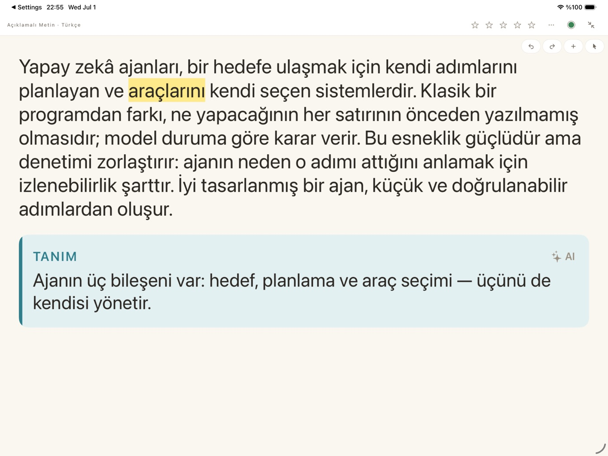
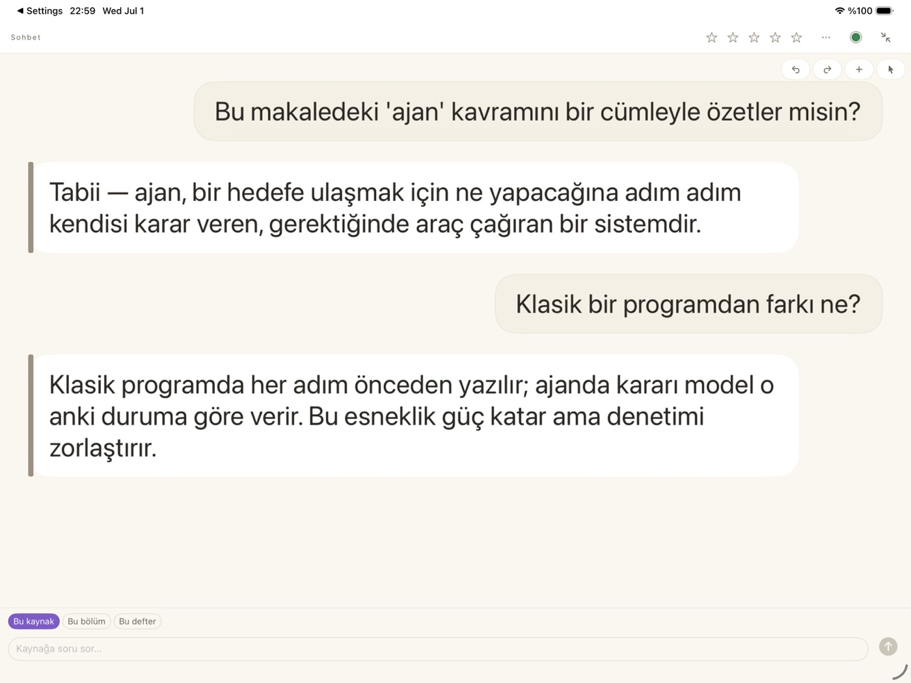
ÖğrenmeLearning
Öğrenme Kartları kaynaktan soru-cevap üretir. Dokun, çevir; cevabına göre bir yüz seç. Aralıklı tekrar (SM-2) zorlandığın kartları öne, bildiklerini geriye alır. Her şey blok içinde: bir kaynak, bir deste.Flashcards are generated from the source. Tap, flip, pick a face for how it went. Spaced repetition (SM-2) brings the hard cards forward and pushes the known ones back. All inside the block: one source, one deck.
Terimler Sözlüğü ise metindeki kilit kavramları kısa tanımlarıyla listeler. Salt referans: dönüp bakılır, üstüne not alınır; kart üretimine de yumuşak bağlam olur.The Glossary lists the key concepts of the text with short definitions. Pure reference: you look back at it, write over it; it also softly guides card generation.
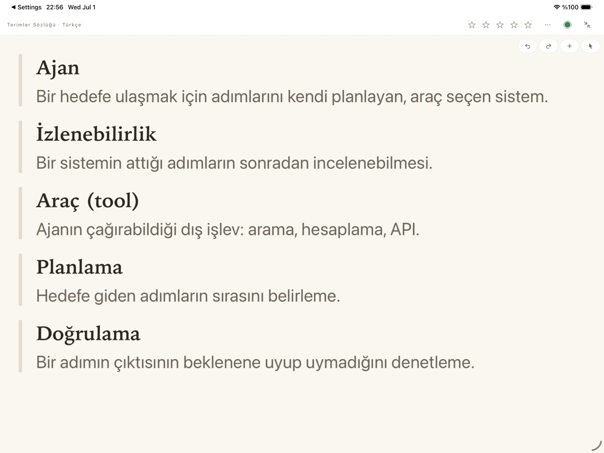
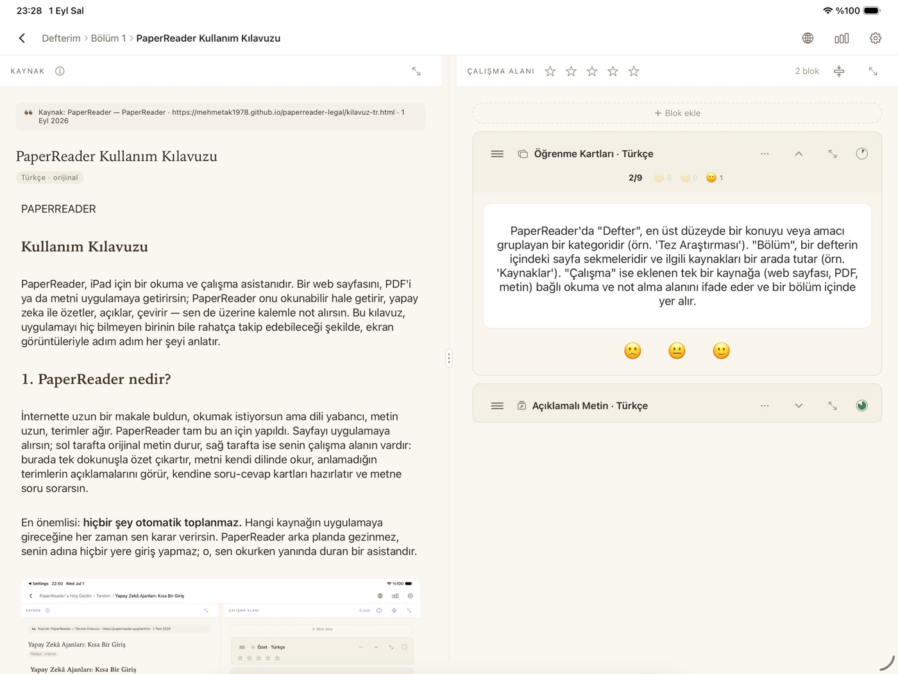
Apple PencilApple Pencil
Mürekkep, bloğun kendi koordinatında saklanır. Yakınlaştır, kaydır, tam ekrana geç, bir hafta sonra başka iPad'de aç — çizdiğin çizgi aynı kelimenin altında durur.Ink is stored in the block's own coordinate space. Zoom, scroll, go full screen, open it a week later on another iPad — the line you drew is still under the same word.
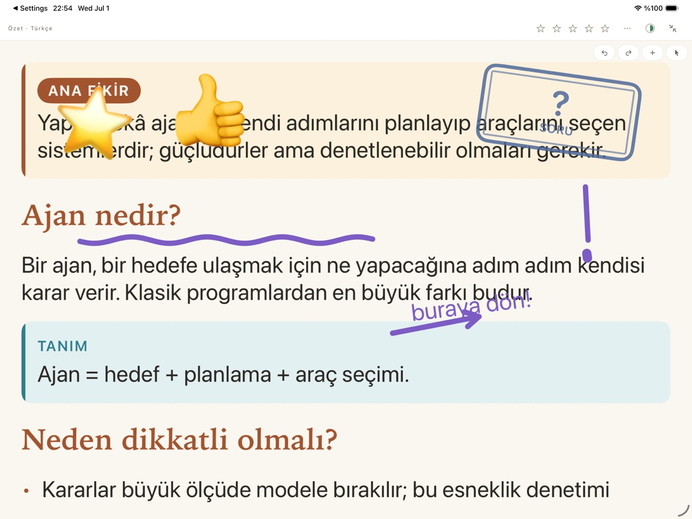
YerleştirPlace
Tuvalde parmağınla yarım saniye bas: YERLEŞTİR ızgarası açılır. Metin kutusu, tarih damgası, yer imi; ÖNEMLİ / SORU / TEKRAR BAK mühürleri; renkli tepki emojileri; rakamlar. Seçtiğin şey bastığın noktaya iner, hafif rastgele bir eğimle. Mühürlerin rengi, boyutu, opaklığı ve eğim aralığı Ayarlar'da senin.Hold a finger on the canvas for half a second: the PLACE grid opens. Text box, date stamp, bookmark; IMPORTANT / QUESTION / REVISIT seals; colorful reaction emoji; numerals. Whatever you pick lands exactly where you pressed, with a slight random tilt. Seal color, size, opacity and tilt range are yours in Settings.
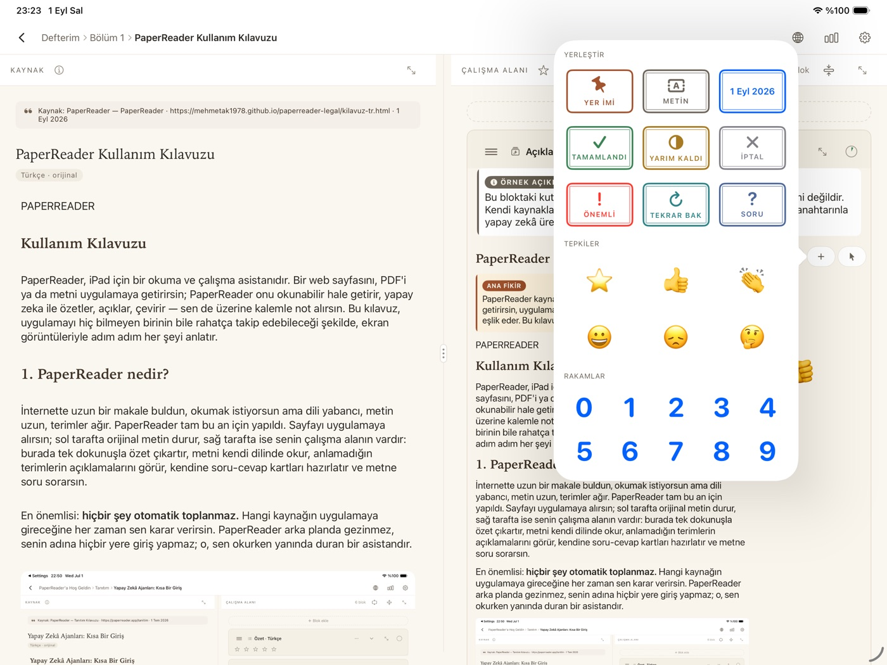
Yer imleriBookmarks
Blokta bir konumu iğnele, birkaç etiket ve istersen kısa bir not ekle. İğne satırın sol boşluğunda durur, PDF'e girmez. Kütüphanedeki "Yer İmleri" listesi defterlere, etiketlere ve aramaya göre süzülür; dokununca tam o satıra gider.Pin a spot in a block, add a few tags and, if you like, a short note. The pin sits in the left margin and never enters the PDF. The "Bookmarks" list in the library filters by notebook, tag and search; tap one and you land on that exact line.
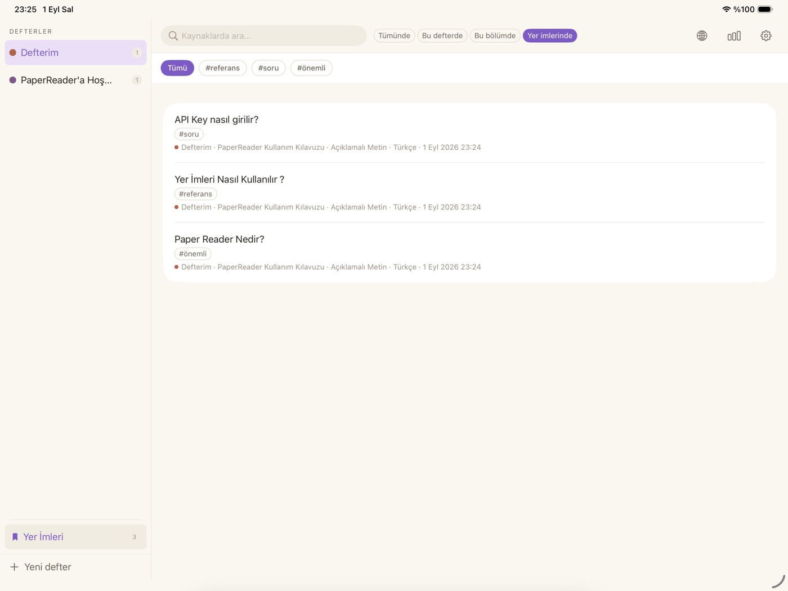
Kaynak kanallarıSource channels
Nereden gelirse gelsin kaynak, aynı yapıya çözülür: başlıklar, paragraflar, resimler, tablolar. Üstünde künye, altında senin çalışman.Whatever the origin, a source resolves into the same structure: headings, paragraphs, images, tables. A citation on top, your work below.
Uygulama içi tarayıcı; kendi oturumunla. Favori panosu kategorili; görseller kaydedilir, link çürüse de kalır.A built-in browser using your own sessions. A categorized favorites board; images are saved so the source survives link rot.
Güvenli arama zorunlu · içerik filtreliSafe search enforced · content filteredPDF, Word, RTF, TXT, Markdown. Başlıklar yazı boyutundan tanınır; gömülü resimler okunma sırasında yerini alır.PDF, Word, RTF, TXT, Markdown. Headings are detected from type size; embedded images land in reading order.
PDF · DOCX · RTF · TXT · MDSafari'de ya da Dosyalar'da Paylaş → PaperReader. Uygulama açılır, hangi deftere gideceğini sorar.In Safari or Files: Share → PaperReader. The app opens and asks which notebook it belongs to.
URL · metin · dosyaURL · text · filePanodaki metin, başlığıyla. E-posta, not, herhangi bir yerden.Text from the clipboard, with a title. From email, notes, anywhere.
Düz metin · MarkdownPlain text · Markdown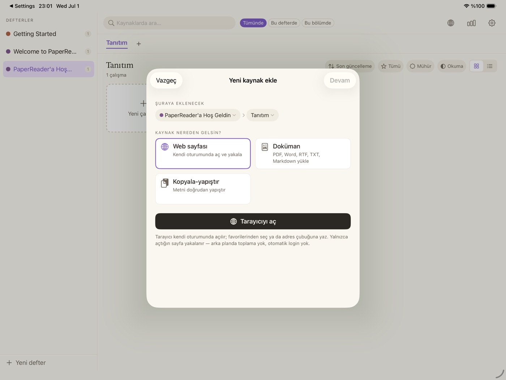
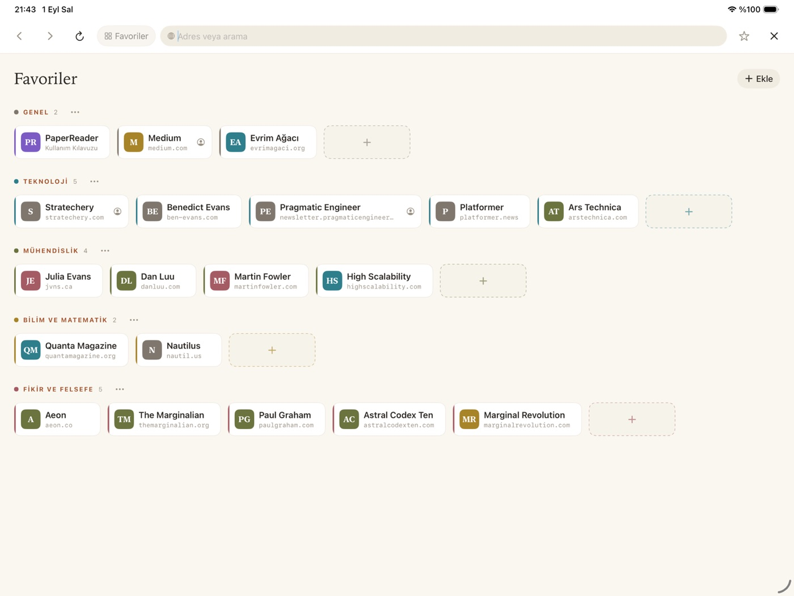
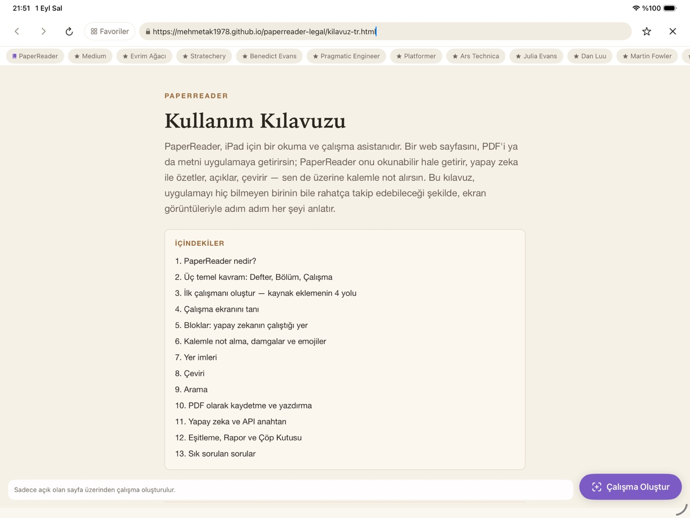
RaporReport
Kütüphanenin büyümesi, okuma hunisi, zayıf kartlar, günlük etkinlik haritası ve yapay zeka harcaması — hepsi kendi verinden türetilir, cihazda. Zaman penceresini seç; her grafik ona uyar.Library growth, the reading funnel, weak cards, a daily activity map and AI spend — all derived from your own data, on device. Pick a time window; every chart follows.
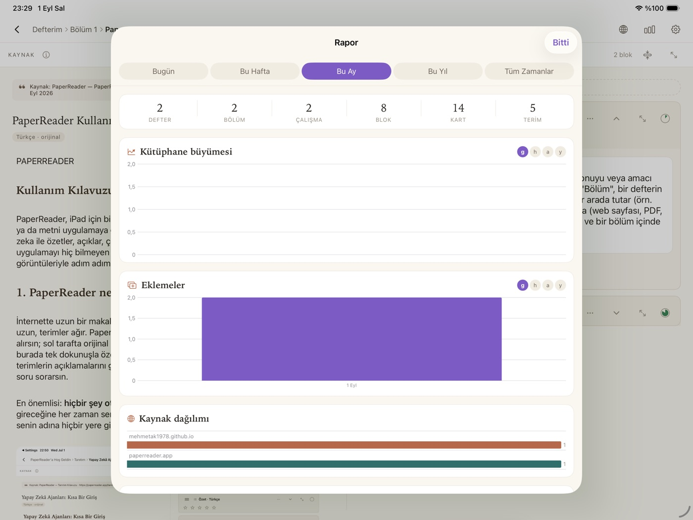
İlkelerPrinciples
Ben okurken yardımcı — arka planda hasat eden bot değil. An assistant while I read — not a bot harvesting in the background.
Anthropic, Gemini, OpenAI ya da Groq — API anahtarını sen girersin; cihazda Keychain'de durur. Metin, sağlayıcıya doğrudan ve yalnızca sen onayladıktan sonra gider. Aradan geçen sunucu yok.Anthropic, Gemini, OpenAI or Groq — you enter your own API key; it lives in the device Keychain. Text goes straight to the provider, and only after you consent. No server in between.
Defterler, notlar, mürekkep — hepsi senin özel iCloud veritabanında eşitlenir. Sil, yeniden kur, başka iPad'de aç: aynı yerden devam.Notebooks, notes, ink — all synced in your private iCloud database. Delete, reinstall, open on another iPad: pick up where you left off.
Sol panel her zaman orijinal dilde, üstünde kalıcı künye. Yapay zeka açıklamaları ayrı bir katmandır; metnin kendisine hiçbir zaman dokunmaz.The left panel is always in the original language with a permanent citation. AI annotations are a separate layer; they never touch the text itself.
Her çağrının token'ı sayılır; aylık tahmini maliyet kategori ve sağlayıcıya göre Rapor ekranında. Hafif işler ucuz modele, ağır işler güçlü modele — sen seçersin.Every call's tokens are counted; estimated monthly cost by category and provider sits in the Report screen. Light jobs go to a cheap model, heavy jobs to a strong one — your choice.
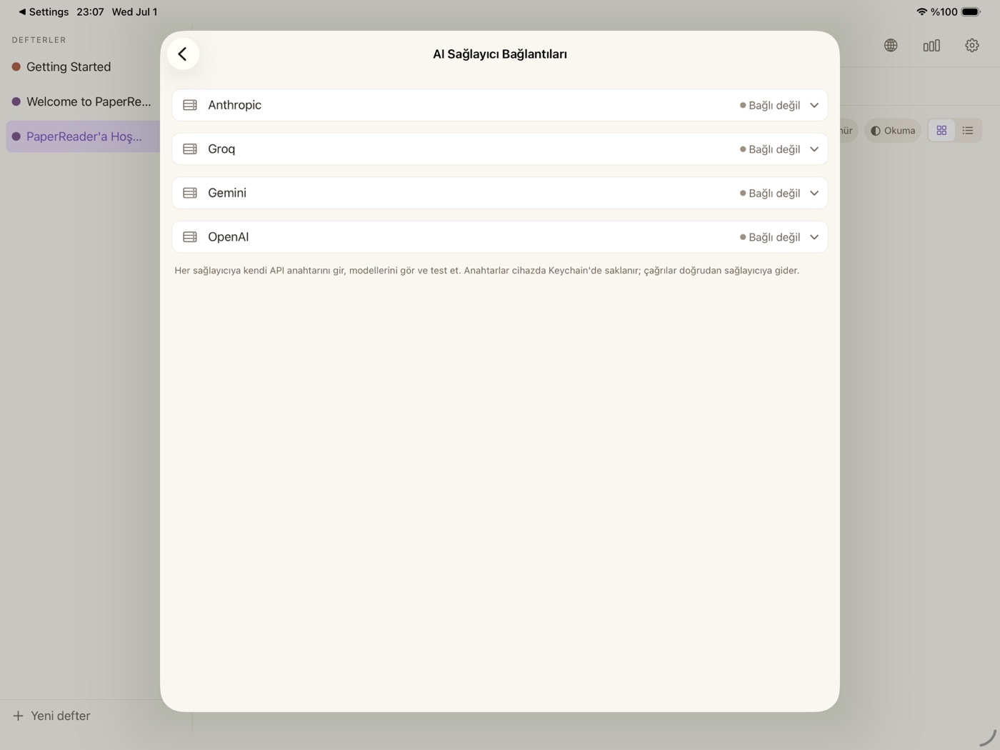
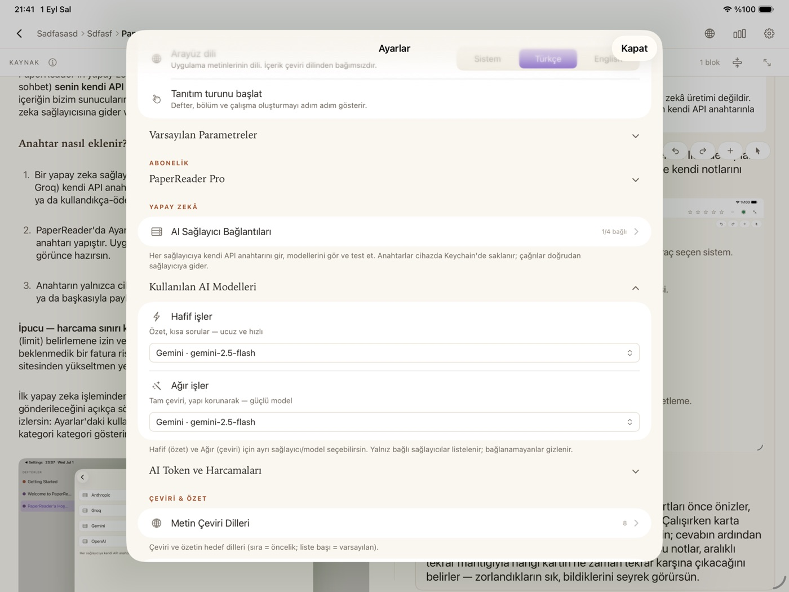
FiyatPricing
Yapay zeka maliyeti sağlayıcına gider; PaperReader'ın kendisi yalnızca kaynak sayısına göre ücretlendirilir.AI costs go to your provider; PaperReader itself is priced only by how many sources you keep.
iPad'indeOn your iPad
İlk 10 kaynak ücretsiz. Uygulama açılınca kısa bir tanıtım turu seni karşılar.First 10 sources free. A short guided tour greets you on first launch.